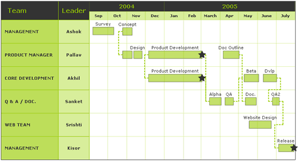

| Gantt Chart > Overview |
| The Gantt chart is a specialized chart used for displaying various timelines like project timelines, development timelines etc. It can be used for any of the following:
In short, Gantt charts help you monitor progress of a project. You can
immediately see what should have been achieved at a point in time. Also,
they allow you to see how remedial action may bring the project back on
course, if it's running off the track. |
FusionCharts Gantt chart is a date based Gantt chart that allows you to plot the tasks visually i.e., for each task you'll have to provide the exact start and end date. A typical FusionCharts Gantt chart looks as under: |
|  |
FusionCharts Gantt chart allows for the following features:
|
| Date based plotting of tasks |
In FusionCharts Gantt chart, each task is defined by a start date and an end date. All the dates need to be a valid date. FusionCharts allows you to specify the date in any one of the following formats:
For each XML data document, you’ll have to specify the date format
in which you’ll be providing dates to FusionCharts Gantt chart.
If in case you don’t mention, FusionCharts defaults it to mm/dd/yyyy. |
| Multiple and irregular division of dates on the visual timeline |
| In FusionCharts Gantt chart, you can divide
and sub-divide the visual date interval into any number segments. For example,
if you want to plot a Gantt chart illustrating the development of a certain
project during a 3 months time span and you want to show weekly progress,
you can easily divide the time period into weeks based on their actual dates
to show the true progress. In the visual date timeline, the top bar could
represent the 3 months by their names, and the bar below it could display
the weeks. In most of the other Gantt charts, you're forced to divide a month into 4 weeks only, thereby resulting to aberrations in visual data display, as a month always is more than 4 weeks. But since the FusionCharts Gantt chart is date based, all your divisions of date are perfect. You can therefore show a week starting in one month and ending in other. |
| Milestones indicating crucial points |
| Milestones are an important part of the Gantt chart as they allow you to visually depict any crucial dates on the chart. FusionCharts allows you to create your own milestones on the chart based on date and task i.e., for a given task you can specify milestones on specific dates, and you can customize all the visual properties of the milestone including shape (star or polygon), size and colors. |
| Task Connectors |
| FusionCharts Gantt chart allows you to draw connectors between your task bars to indicate the flow of the entire process. On the functional side, to draw a connector, all you need to do is specify the Id of the two tasks, which you want to connect. Apart from this, you can also specify where the connector joins the start and end task bar individually – at their start or end. For example, if you need to plot two connecting tasks which are simultaneous in nature, that is each process starts at the same time and relates to the same thing, you can connect the start of task bar to the start of end bar to give the visual effect. Similarly, if the second process can start only after the first process has ended, you can connect the end of first task bar to the start of succeeding task bar. |
| Interactive data grid to show additional tabular data in the chart |
| FusionCharts gantt chart allows you to plot your own interactive data table in the chart. This data table can have as many columns as you wish (and the number of rows is equal to the number of processes). The best part about this data table is that it's columns are draggable - so you can easily fit in more information in less space, thereby giving the ease of use to the end users. All the visual and functional properties of this data table can be defined by the Gantt chart XML itself. |
| Before we delve directly into the XML structure of the Gantt chart, let's first have a look at the various elements that consitute a Gantt Chart. |